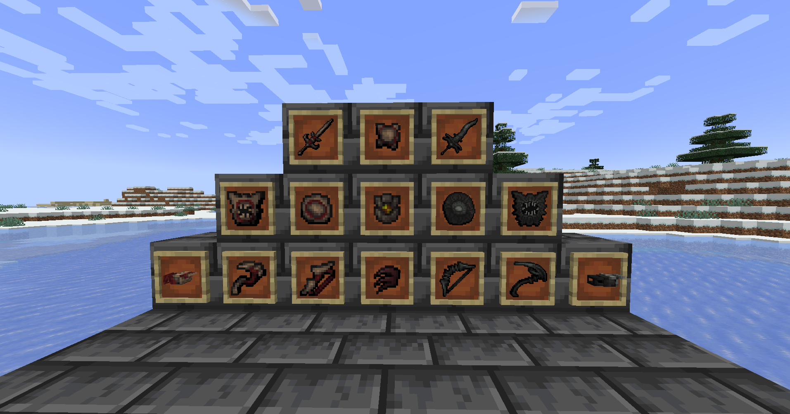

A ported Minecraft mod that introduces nearly 30 unique weapons with special traits and abilities
This required using 2 libraries to make the items and models, which proved tough but following other examples and experience with games helped me. The version mismatch required an entire rewrite of the original's code, which was a challenge. But understanding what was done at the core level kept my scope lined up to match the original in the port.
